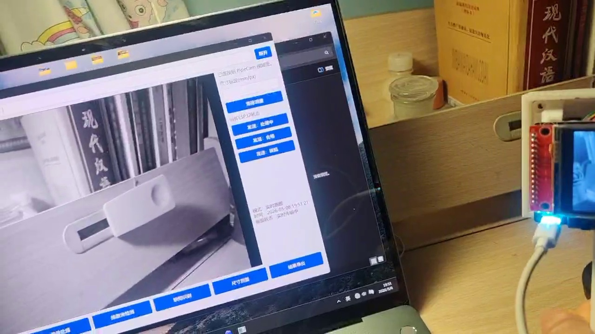
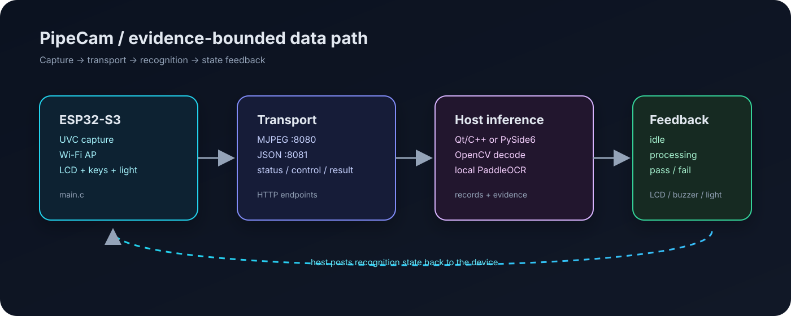
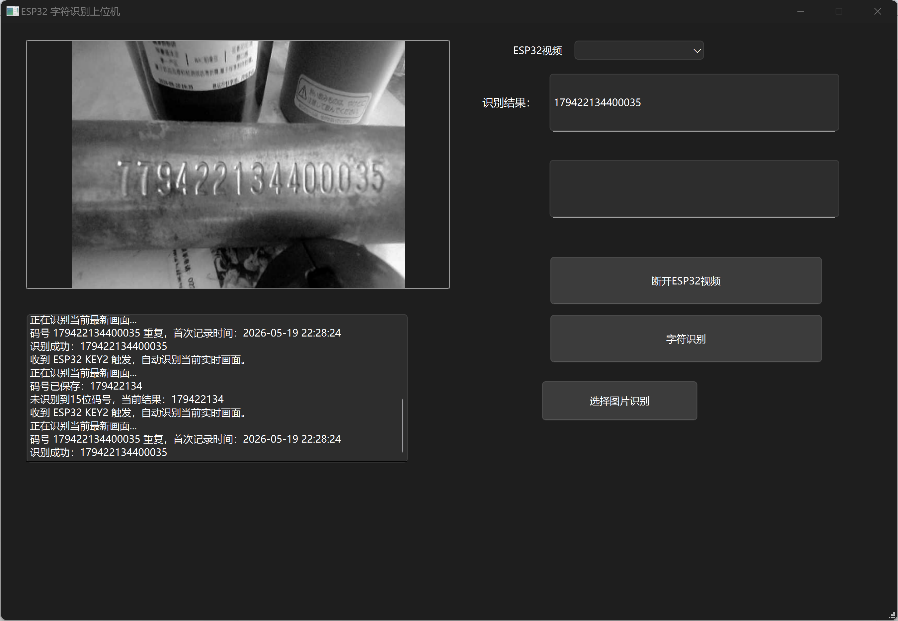
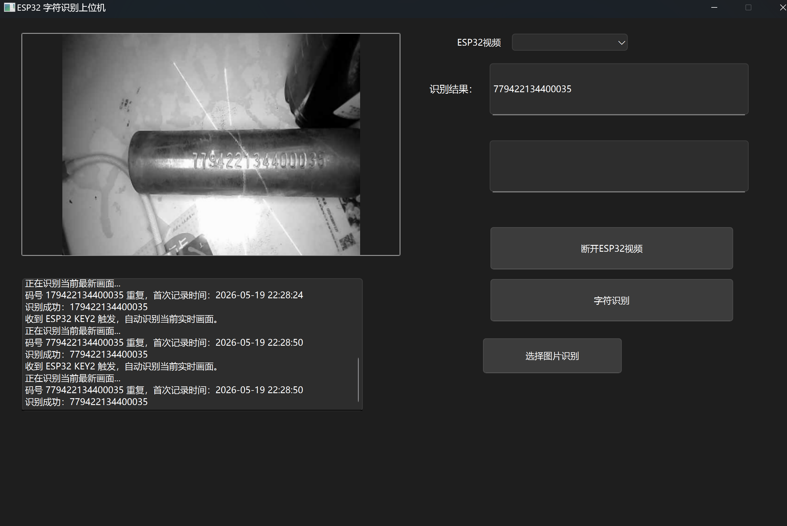

Device firmware
UVC frame capture, SoftAP startup, multipart JPEG streaming, LCD status rendering, physical keys, laser / fill-light control, buzzer output, and result-state handling live in main.c.
PipeCam couples an ESP32-S3 UVC camera endpoint with a Qt / Python host. Frames travel over a board-hosted Wi-Fi network; local OCR turns visual evidence into a device-visible result state.

The device captures and exposes state; the host performs recognition; the returned state is rendered on the device. The repository keeps each layer inspectable.

UVC frame capture, SoftAP startup, multipart JPEG streaming, LCD status rendering, physical keys, laser / fill-light control, buzzer output, and result-state handling live in main.c.
The Python adapter and Qt bridge decode frames, run local PaddleOCR variants, persist records, and post processing, pass, fail, or error feedback to the board.
The media is preserved as evidence of the integrated setup. It is not presented as a controlled benchmark.


The host does not need a broker or cloud service. It talks directly to the device over the isolated SoftAP network.
| Endpoint | Method | Role |
|---|---|---|
:8080/stream | GET | Multipart MJPEG frames from the UVC camera |
:8081/status | GET | Device state, key levels, clients, and capture counters |
:8081/control | GET | Laser, realtime, capture, result, and buzzer controls |
:8081/result | POST | OCR text, confidence, reason, and result state feedback |
The publication separates source, artifacts, media, third-party material, and known limitations so the page can be impressive without overstating what was measured.
No accuracy benchmark, calibration report, safety certification, authentication layer, or production release is asserted. The default AP password is visible in source and must be changed before deployment.